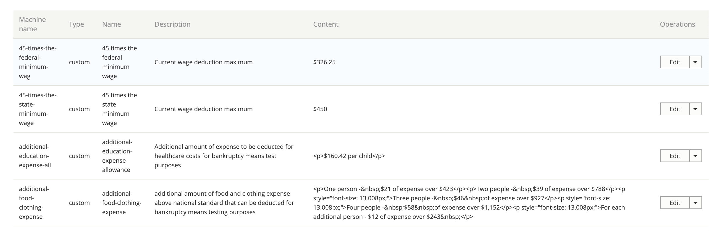

Custom Tokens¶
Custom tokens may be used in legal content when inserted manually in the format of [type:machine-name].
Custom tokens are managed under the Structure section of the website.
Custom token types¶
Staff can create different types of custom tokens to better manage custom tokens. Currently we have types of:
- Custom
- Process
- Custom-ES
- Custom-PL
- Process-ES
- Process-PL
Note
The machine name for each type is lowercase. Uppercase is not supported.
Adding and editing custom tokens¶
Note
Custom tokens are not translatable. They can technically be translated but the translations can’t be detected on the front-end. The approach then is to create separate tokens per language and then insert the correct language token in the legal content.
To create a token¶
- Select the token type. This will be the type part in [type:name].
- Enter a name. This is the name for display. It is not the name used in the token.
- Enter the machine name ID. Only lowercase letters, numbers, hyphens, or underscores may be used and each machine name ID must be unique. This is the name part of the token
- Optionally, enter a description
- Enter the content.
- Select the language code.
Note
You may need to view the source of the content to strip out paragraph tags for tokens that should be used in-line with other content, for example, tokens that are used mid-sentence or mid-paragraph.
Recommendations for Spanish and Polish tokens¶
The recommended approach for Spanish and Polish tokens is:
- Create the token in English first
- For Spanish, create the Spanish token using the -es token type that matches the English but use the English machine name (for example, custom:minimum-wage would be custom-es:minimum-wage)
- For Polish, create the Ppanish token using the -pl token type that matches the English but use the English machine name (for example, custom:minimum-wage would be custom-pl:minimum-wage)
- Set the language code to the correct language.
This approach will make it easier to update the tokens in content when translating.
Using custom tokens¶
There is no tool in the WYSIWYG to automatically insert a custom token. To add a token, just type it in the format of [type:name] where type is the custom token type and name is the token name.
Examples¶
The custom token 45 times the federal minimum wage would be [custom:45-times-the-federal-minimum-wage]
The process token file-motion would be [process:file-motion]
